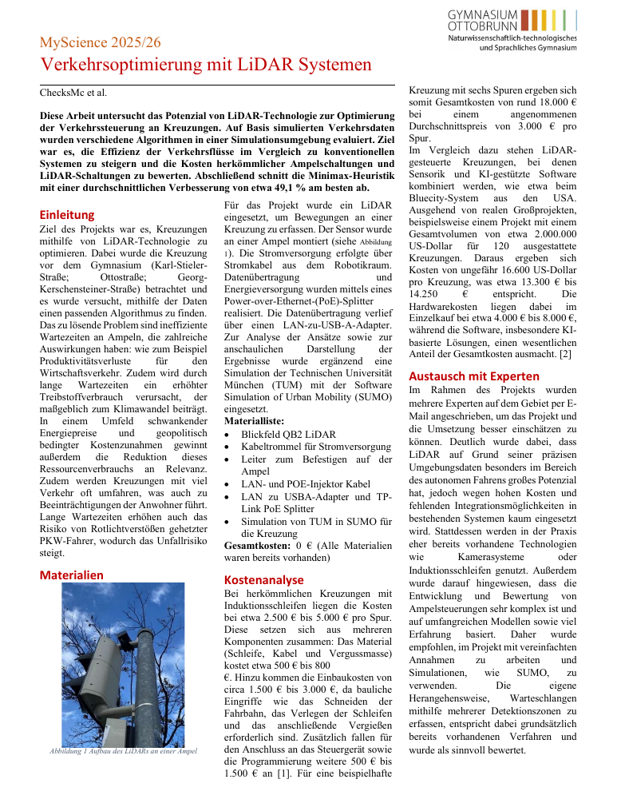

Personal website
This is
ChecksMc.
I am a student in Q12 in Bavaria and interested in almost anything, including science, arts, music, linguistics and etymology, and sports. At the moment, I am especially interested in computer science and video games as a medium for emotions and ideas. This is a place for the things I learn, write, and make.
CurrentlyI am currently working on bwinf round 45, round 1, and W-Seminar.
Papers
Some things I have researched and written about.
A little about me
Still figuring things out, which is kind of the point.
I am a student in Q12 in Bavaria and interested in almost anything, including science, arts, music, linguistics and etymology, and sports. At the moment, I am especially interested in computer science and video games as a medium for emotions and ideas.
I like discovering connections between different subjects and following questions wherever they lead.
- Age
- 16
- School year
- Q12
- Interests
- Science, arts, music, languages, sports
- Languages
- Deutsch / English / 中文 / Français
Current projects
A closer look at what I am working on right now.
Featured projectN/A
W-Seminar
A current school project. More information will be added as the project develops.
- Status
- N/A
- Details
- N/A
- Repository
- GitHub ↗
BWINF 45 Round 1N/A
Further projectsN/A